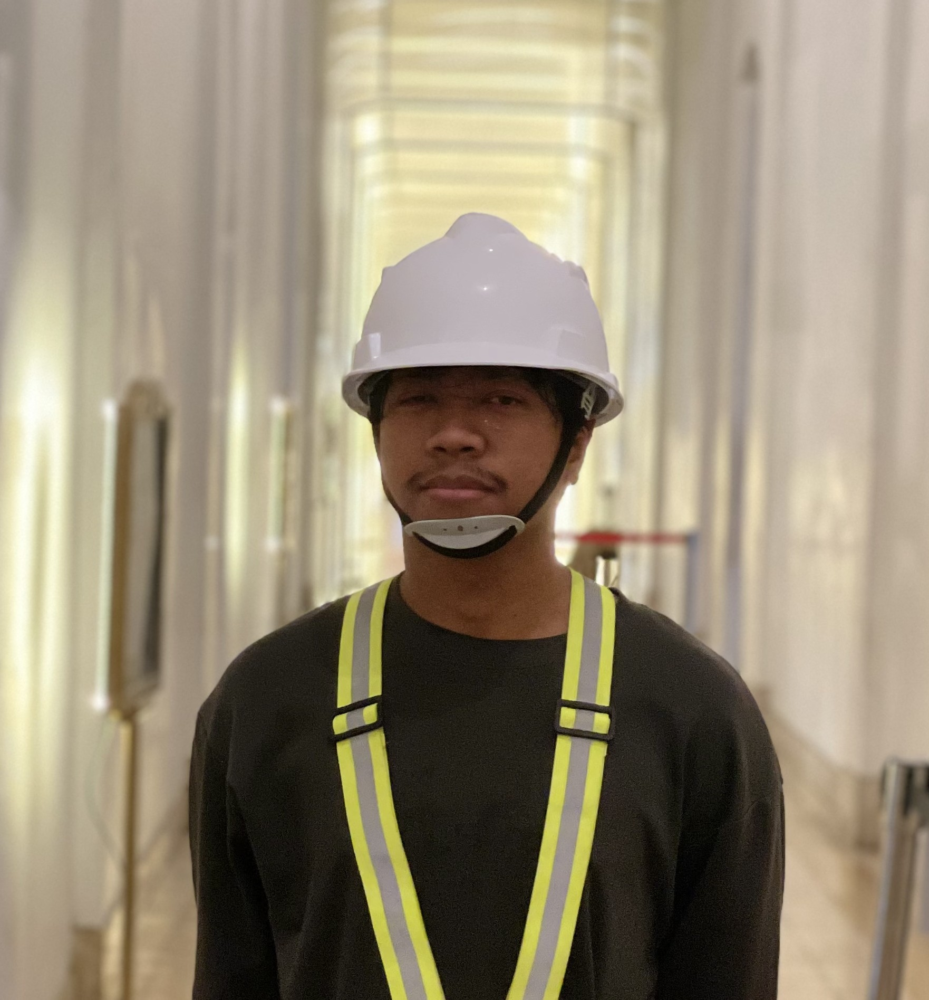

Research Focus
Closed-loop control, applied computer vision, autonomous mobile robotics, and Industry 4.0 / 5.0 systems integration.
ROBOTICS • AI • AMR • AUTOMATION
Senior robotic automation engineer building practical systems for smart factories, autonomous mobility, industrial AI, and modern manufacturing operations.

About Me
Senior Robotic Automation Engineer based in West Java, Indonesia, specializing in robotics, industrial AI systems, computer vision, IoT, AMR, embedded systems, and smart manufacturing technologies.
I currently lead multidisciplinary engineering teams focused on robotics, automation, AI, research, and industrial IoT, delivering end-to-end systems from concept to deployment.
Closed-loop control, applied computer vision, autonomous mobile robotics, and Industry 4.0 / 5.0 systems integration.
Robotic & Development Supervisor at PT Gistex Garmen Indonesia, guiding multidisciplinary engineering teams.
Expanded AMR fleet growth from 5 robots to more than 15 while reducing tracking costs by more than 90%.
Preparing for graduate-level research and master's study in robotics, AI, and smart manufacturing.
PT GISTEX • Full-time position • March 2025 - Present
PT GISTEX • Full-time position • January 2022 - March 2025
PT Kereta Api Indonesia (Persero) • Intern • March 2020 - August 2020
PT DJARUM • Intern • January 2020 - February 2020
PT DJARUM • Intern • July 2018 - September 2018
Scalable internal automation platform for garment sewing lines, expanded into pneumatic pocket setters, overlock automation, drawstring bartack systems, and custom sewing machine solutions.
Developed flexible embedded control systems, pneumatic fixtures, sensor-driven machine sequences, and scalable automation concepts for garment manufacturing.
IoT-based monitoring platform for real-time operator output tracking, downtime classification, and production visibility across garment manufacturing lines.
Built around ESP8266, RFID authentication, wireless remotes, Wi-Fi communication, and centralized production reporting.
Manufacturing Execution System dashboard for centralized production monitoring, operator productivity tracking, and real-time line performance analysis.
Maintained and enhanced an existing C# application that connected IoT devices to the central database for live manufacturing visibility.
Developed machine data acquisition and database integration systems for industrial equipment, enabling production and machine performance data to be collected, stored, and made available for monitoring and analysis.
Integrated Pattern Seamer, Bullmer automatic cutter, and Needle Manager data into a structured database layer for machine monitoring, production traceability, and inventory accountability.
Embedded automation system for automatic elastic feeding, precision cutting, and production quantity control in garment manufacturing.
Designed to replace manual cutting with a reliable sequence-based system using stepper motor control, pneumatic actuation, and power-loss recovery.
Closed-loop motion control upgrade for precise elastic feeding and higher cutting accuracy during continuous production.
Replaced the open-loop system with encoder feedback and PID control, while simplifying operation through an infrared remote interface.
Supported deployment, maintenance, and continuous operation of AMRs for material handling and internal logistics in a garment manufacturing facility.
Contributed to factory mapping, navigation optimization, preventive maintenance, and fleet growth from 5 robots to more than 15 within two years.
Deployed three service robots at Omah Mode Bandung to support autonomous food delivery routes, table mapping, and staff operation training.
Implemented on-site robot setup, workflow integration, and operator training for reliable restaurant service automation.
Built a custom fleet management platform for real-time AMR monitoring, analytics, and integration with factory workflows.
Integrated robot SDK and REST APIs to deliver live robot locations, task history, charging status, idle time tracking, and dispatch capabilities.
Developed laser-based positioning systems that projected alignment guides onto sewing workstations to improve consistency and reduce setup time.
Delivered a low-cost automation solution that improved operator productivity and product quality without replacing existing equipment.
Cost-effective automation solution that transformed a standard Jooke AMS sewing machine into a dedicated sleeve placket machine.
Integrated pneumatic actuators, servo mechanisms, sensors, and an Arduino-based controller to automate sewing operations and reduce manual handling.
Digital sewing pattern projection system for PT Gistex Garmen Indonesia, replacing printed templates with projected cutting lines on fabric.
Reduced paper use, accelerated sample prep, and simplified revisions through accurate projector calibration and workstation optimization.
Collaborative robotic applications for automatic inner box handling, template sheet handling, and steam ironing automation in garment manufacturing.
Integrated custom end-effectors, fixtures, sensors, pneumatic devices, and industrial control systems to support safe human-robot collaboration and improve production consistency.
Smart RFID garment tracking system developed for real-time production monitoring, bundle tracking, and manufacturing traceability across garment production workflows.
Built with significantly lower implementation cost compared to enterprise competitors, reducing system investment from more than 1 billion IDR to under 100 million IDR.
Centralized production management platform combining batch workflow control with RFID-enabled garment tracking for scalable manufacturing execution.
Managed production batches from cutting to finishing while providing status monitoring, WIP visibility, dashboards, and historical reporting.
1.2 kWp solar PV system with real-time monitoring for energy generation, battery status, inverter performance, and remote system visibility.
Integrated Solar2MQTT on ESP8266 with MQTT-based dashboards for renewable energy monitoring and scalable Industrial IoT deployment.
Real-time compressed air pressure monitoring for Duck Down Filling Machines using MQTT and embedded sensor telemetry.
Delivered continuous pressure visibility, early abnormality detection, and lower network load with MQTT-based monitoring.
Closed-loop control system for a CTP sweetener machine that automatically regulated motor speed and monitored processed paper length in real time.
Final thesis project with rotary encoder feedback, VSD-based speed control, and SD card data logging for production performance analysis.
Google • Issued Sep 2024
Certification focused on computer vision technologies, image analysis, and cloud-based AI processing using Google Cloud Vision API.
Google • Issued Aug 2024
Credential ID: 10907833
Demonstrated knowledge in generative AI systems, machine learning workflows, and Vertex AI ecosystem.
PT. Nusabot Inovasi Teknologi • Issued Feb 2024
Embedded systems and real-time operating systems certification for microcontroller-based automation development.
Forum Human Capital Indonesia • Issued Aug 2020
National certified internship program focused on industrial engineering, practical industry experience, and professional workforce readiness.
Badan Kepegawaian Negara • Issued Sep 2021 · Expires Sep 2023
Credential ID: 6534A0E70BE612A82D8F270D9933901A
National competency certification program for professional workforce development.
Cisco Networking Academy • Issued Jul 2015 · Expires Jul 2017
Networking certification focused on routing, switching, and ISP-scale networking infrastructure.
Cisco Networking Academy • Issued Sep 2014 · Expires Sep 2016
Fundamental networking certification covering TCP/IP, networking devices, and small business infrastructure deployment.
2025 • ITERA
Selected as stakeholder representative during accreditation assessment activities, contributing professional insights from industrial engineering and technology sectors.
2024 • PT Gistex
Recognized for innovation, leadership, industrial automation initiatives, and contributions to digital transformation projects.
2020 • Universitas Muria Kudus
Awarded for outstanding academic achievement, engineering performance, and research contribution during undergraduate studies.
2018 • Universitas Muria Kudus
Scholarship recipient recognized for continuous academic excellence and performance improvement throughout engineering studies.
2016 • Universitas Muria Kudus
Achieved the highest entrance examination score for the Electrical Engineering program admission.
Native / Bilingual
Professional Working Proficiency
Elementary
Let’s connect
Open for collaboration in robotics, AI systems, industrial automation, smart manufacturing, computer vision, and embedded technology projects.